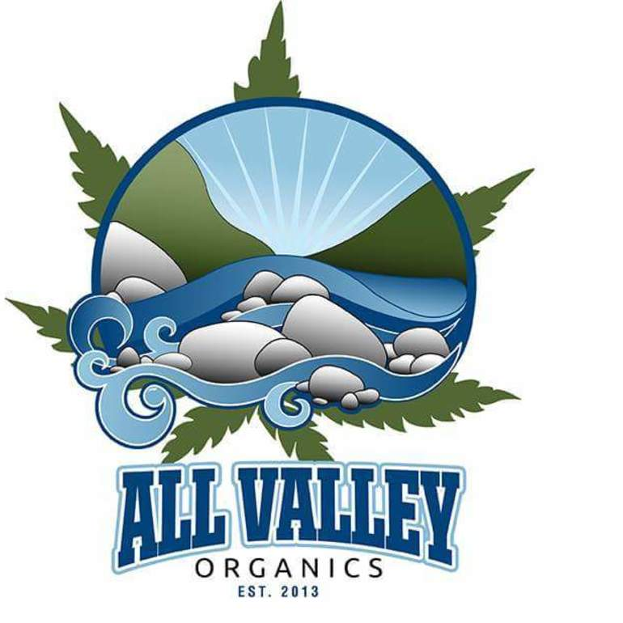

About All Valley Organics
All Valley Organics offers the BEST quality medicinal cannabis in the Central Valley to patients 21+!
We offer $50 minimum, FREE delivery on every order, and daily coupons. Deliveries made within the hour by friendly, family oriented staff. Delivery area ranges from N. Shepherd Ave to the 180, and W. to West Ave.
We only offer TOP shelf strains grown with 60+ years experience. The quality and taste of our products is hard to beat! AVO is members only, non-profit, private medical marijuana association offering true compassion and dependability to patients in the Central Valley. Taking pride as being one of the best, safest, and most professional delivery services in CA, we offer fast, reliable, and safe delivery of medical marijuana products to qualified patients directly to their door.
First time patients can call or text us for fast and easy verification. Please have your current, and up-to-date, Doctor's Recommendation and a valid CA ID or Driver's License.